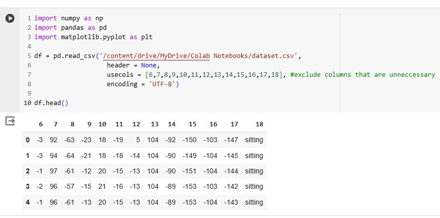
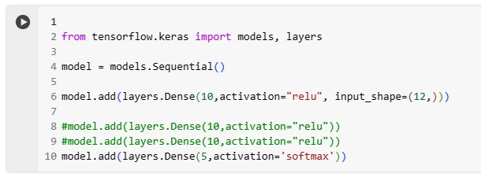

Given:
- dataset which includes position data of person with label
method:
- Classification model
- supervised learning
- Deep Neural Network
Approach:
- Analyze dataset.

download dataset here
- Then I separated my dataset into train data and test data.
-Using train data to train model and test data for verification.
-DNN tries to minimize the loss(percentage that model guessed wrong answer)
- Import model from tenserflow and define neural network model

-compile model after